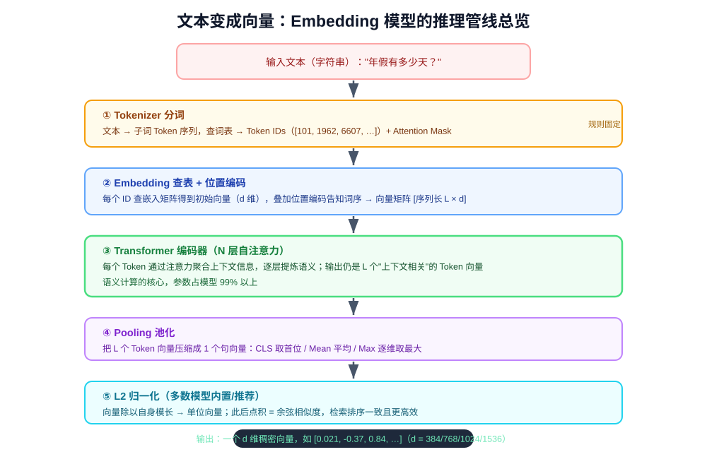
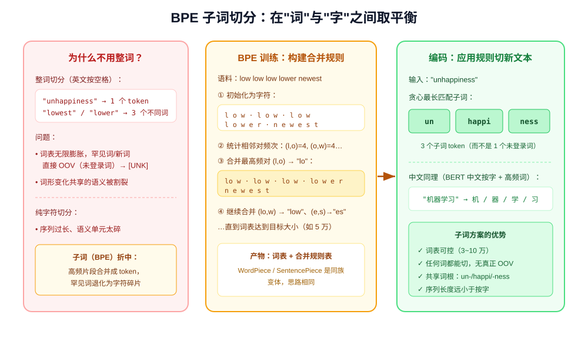
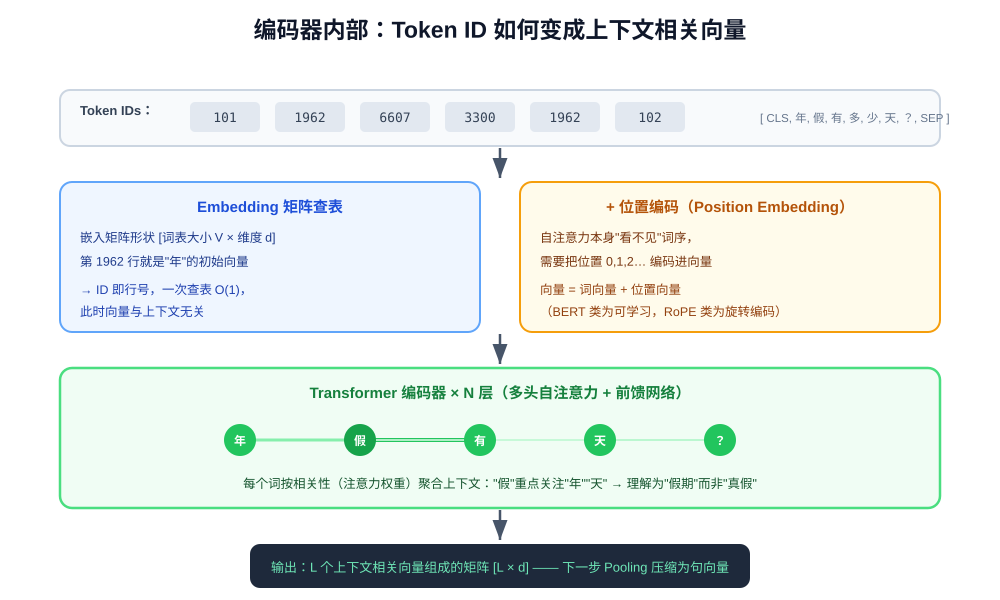
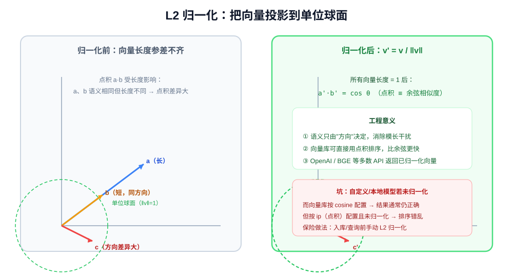

文本是如何变成向量的：Embedding 推理管线全解析
在 RAG 和语义搜索中，我们调用一次 Embedding API，就能把一段文本变成一串浮点数：
"年假有多少天？"→[0.021, -0.37, 0.84, …, 0.12]。 这串数字为什么能代表"语义"？模型内部到底经历了什么？本文从推理（inference）视角完整拆解 文本 → Token IDs → 上下文向量 → 池化 → 归一化 → 句向量 的五步管线，并给出实战代码与工程要点。 （词向量的训练原理、语义空间几何可参阅同目录《什么是词向量》；向量如何被存储检索见《向量数据库》。）
一、为什么要把文本变成向量
计算机只认识数字。要让机器"理解"文字，第一步是把文字编码成数字。最朴素的方案是 One-Hot（独热编码）：
词表 [猫, 狗, 汽车]
猫 → [1, 0, 0]
狗 → [0, 1, 0]
汽车 → [0, 0, 1]
它有三个致命问题：
- 词汇鸿沟：任意两个词的向量都正交（点积为 0），"猫"和"狗"的距离跟"猫"和"汽车"一样远——完全无法表达语义亲疏；
- 维度灾难：向量维度 = 词表大小，现代词表 5~50 万，且向量极度稀疏（几乎全是 0）；
- 无法泛化：没见过的词（OOV）没有位置。
Embedding（稠密向量） 换了个思路：用一个几百~几千维的稠密浮点向量表示文本，每一维都隐含某种语义特征， 让"意思相近的文本在几何空间中距离相近"。这不是人工设计的，而是模型在海量语料上训练后"涌现"出的表示能力。 今天我们使用的 Embedding 模型（OpenAI text-embedding-3、BGE、MiniLM……）本质都是一个预训练好的编码器， 输入文本、输出向量。本文拆解的就是这次前向计算的完整过程。
二、全景：五步推理管线

文本字符串
→ ① Tokenizer：分词 + 查词表 → Token IDs（整数序列）
→ ② Embedding 查表 + 位置编码 → 初始向量矩阵 [L × d]
→ ③ Transformer 编码器（N 层注意力） → 上下文相关向量矩阵 [L × d]
→ ④ Pooling 池化 → 1 个句向量 [d]
→ ⑤ L2 归一化 → 单位句向量 [d]，送入向量库
注意一个关键事实：Tokenizer 规则和编码器权重都是模型训练时固定死的。推理时文本必须走与训练时完全相同的 分词方式、相同的池化策略，才能得到落在同一语义空间中的向量——这也是后文所有工程约束的根源。
三、第 ① 步：Tokenizer——文本切成 Token
模型不认识字符串，只认识整数 ID。Tokenizer 负责把文本切成模型能处理的最小单元 Token，并映射为 ID。
3.1 为什么是"子词"而不是"整词"
英文按空格切词、中文按字切分，看似简单，但整词方案会导致词表无限膨胀：unhappiness、unhappy、happier
各占一个位置，罕见词和新词直接 OOV。现代模型统一采用 BPE（Byte-Pair Encoding，字节对编码） 等子词算法，
在"词"与"字符"之间取平衡：

- 训练阶段（离线，一次性）：从字符序列开始，反复统计相邻符号对的频次，把最高频的对合并成新符号
（
l+o→lo，lo+w→low），直到词表达到目标大小（通常 3~10 万）； - 编码阶段（每次推理）：对新文本按合并规则做贪心最长匹配。
unhappiness被切成un / happi / ness三个子词——即使整个词没出现过，也能由高频片段拼成，理论上不存在真正的 OOV（最差退化为字符/字节）； - 中文 BERT 类模型以"字"为基础单元再合并高频词，如"机器学习" →
机 / 器 / 学 / 习。
WordPiece（BERT）、SentencePiece（多语言模型常用）是 BPE 的同族变体，核心思想一致。
3.2 特殊 Token 与长度截断
切分后还会补充特殊标记：
| 特殊 Token | 作用 |
|---|---|
<[BOS_never_used_51bce0c785ca2f68081bfa7d91973934]>（CLS） |
句首标记，BERT/BGE 系用它的最终向量作为整句表示 |
[SEP] |
句间分隔（如"问题 + 答案"成对输入时） |
[PAD] |
批量处理时把不同长度的序列补齐到等长，配合 attention mask 屏蔽 |
[UNK] |
兜底未登录词（子词方案下极少触发） |
同时序列会被截断到模型的最大长度 max_seq_length（常见 512 个 token）。注意中文一个字通常就是 1 个 token，
英文一个单词约 1~3 个 token——超长文本不是报错而是被静默截断，这是 RAG 中必须做 Chunk 切分的根本原因
（见《什么是RAG》）。
最终输出两样东西：Token IDs（整数序列）和 Attention Mask（标记哪些位置是真实文本、哪些是 padding）。
四、第 ② 步：Embedding 查表 + 位置编码

4.1 查表：ID 就是行号
模型内部有一个可训练的嵌入矩阵（Embedding Matrix），形状为 [词表大小 V × 向量维度 d]。
Token ID 直接作为行索引，一次查表就取出该 token 的初始向量：
嵌入矩阵 E（训练好的参数，如 V=50000, d=768）
ID = 1962（"年"） → 取 E 的第 1962 行 → [0.12, -0.44, 0.77, …]（768 维）
这一步等价于一次"字典查值"，O(1) 完成。但此时每个词的向量与上下文无关——"苹果"在"吃苹果"和"苹果发布手机" 里取到的是同一个初始向量。
4.2 位置编码：告诉模型词序
自注意力机制本身是"无序"的（同时看到所有词，像一袋词），必须额外注入位置信息：
最终输入向量 = Token 词向量 + 位置编码向量（第 0、1、2… 位各有一个向量）
BERT 系用可学习的位置嵌入（每个位置一个训练出来的向量）；现代模型（如 LLaMA、bge-m3）多用 RoPE 旋转位置编码（通过旋转矩阵把相对位置编码进注意力计算）。此外 BERT 还有 Segment Embedding 区分句子 A/B。
至此，序列变成一个 [L × d] 的向量矩阵，进入编码器。
五、第 ③ 步：Transformer 编码器——语义在注意力中涌现
向量矩阵进入 N 层堆叠的 Transformer 编码器，每层做两件事：
- 多头自注意力（Multi-Head Self-Attention）：每个词计算与句中所有词的相关性权重， 按权重加权聚合其他词的信息来更新自己。"年假"的"假"会高权重关注"年""天""休假"等词， 从而把语义从"真假"的"假"拉向"假期"的"假"；
- 前馈网络（FFN）：对每个位置独立做非线性变换，存储和提炼知识。
attention(Q, K, V) = softmax(Q·Kᵀ / √d) · V
每个词的新表示 = Σ（注意力权重 × 其他词的表示）
经过多层迭代，每个 token 的输出向量都已融合整句上下文——这就是上下文相关表示（contextualized embedding）： 同一个词在不同语境下输出不同向量（一词多义的原理详见《什么是词向量》）。
RAG 使用的 Embedding 模型是双向编码器（BERT 架构，每个词能看到左右两侧的全部上下文）， 与 GPT 类单向解码器不同——编码器的目标就是"理解整句"，比生成式模型更适合做向量表示。
六、第 ④ 步：Pooling——从词向量矩阵到一个句向量
编码器输出的仍是 L 个词的向量矩阵 [L × d]，而语义检索需要一个向量代表整段文本。这一步压缩叫 Pooling：

| 策略 | 做法 | 典型使用者 |
|---|---|---|
| CLS Pooling | 直接取句首 <[BOS_never_used_51bce0c785ca2f68081bfa7d91973934]> token 的输出向量 |
BGE 系列、BERT 微调句向量模型 |
| Mean Pooling | 所有真实 token 向量逐维求平均（用 mask 排除 padding） | sentence-transformers 默认、MiniLM、E5 |
| Max Pooling | 每一维取所有 token 中的最大值 | 较少单独使用，偶尔与 mean 拼接 |
⚠️ 池化方式在模型训练时就已固定，推理时必须严格遵循模型文档：BGE 用 CLS、MiniLM 用 mean—— 用错池化相当于把训练好的语义空间打乱，相似度会全面失真。一个常见误区是"直接拿原始 BERT 的 CLS 向量做检索"， 效果很差；必须使用经过对比学习微调的句向量模型（SimCSE、BGE、E5 等），它们的 CLS/mean 才被训练成 "整句语义表示"。
七、第 ⑤ 步：L2 归一化

最后通常对句向量做 L2 归一化：向量除以自身模长 v' = v / ‖v‖，所有向量被投影到半径为 1 的单位球面上。
- 语义只由方向决定：归一化消除向量长度（模长）差异，相似度只看夹角；
- 点积 ≡ 余弦相似度：两个单位向量的点积就等于余弦值，向量数据库可直接用更快的点积（
ip）排序； - OpenAI、BGE 等主流 API/模型返回的向量默认已归一化；但部分本地模型或自定义编码需要手动处理。
# numpy 手动 L2 归一化
norms = np.linalg.norm(vectors, axis=1, keepdims=True)
vectors = vectors / np.clip(norms, 1e-12, None)
# sentence-transformers 则直接 model.encode(texts, normalize_embeddings=True)
至此，我们得到了最终的 d 维稠密向量（d 常见 384 / 768 / 1024 / 1536 / 3072），可以写入向量数据库， 等待与查询向量做相似度检索。
八、动手实践
8.1 调用 OpenAI Embedding API
from openai import OpenAI
client = OpenAI()
def embed_texts(texts: list[str], dimensions: int | None = None) -> list[list[float]]:
kwargs = {"model": "text-embedding-3-small", "input": texts}
if dimensions: # Matryoshka 截断：可用更少维度降低存储/检索成本
kwargs["dimensions"] = dimensions
resp = client.embeddings.create(**kwargs)
return [item.embedding for item in resp.data]
doc_vecs = embed_texts(["年假政策：正式员工 10 天……"]) # 入库文档
q_vec = embed_texts(["入职六年有几天年假？"]) # 查询问题 —— 必须同一模型
8.2 本地中文模型（BGE，免费离线）
pip install sentence-transformers
from sentence_transformers import SentenceTransformer
# 中文轻量首选；更强可选 BAAI/bge-large-zh-v1.5 或多语言 bge-m3
model = SentenceTransformer("BAAI/bge-small-zh-v1.5")
# BGE 中文检索的关键：查询侧加指令前缀，文档侧不加！
query_instruction = "为这个句子生成表示以用于检索相关文章："
doc_vecs = model.encode(
["年假政策：正式员工每年 10 天……", "报销流程：出差后 10 个工作日内……"],
normalize_embeddings=True, # 内置归一化
batch_size=32,
)
q_vec = model.encode(
query_instruction + "入职六年有几天年假？",
normalize_embeddings=True,
)
两个极易踩的细节：
- 查询前缀指令：BGE 等对比学习模型在训练时，查询端带固定指令、文档端不带。中文 BGE 的指令是
"为这个句子生成表示以用于检索相关文章："；E5 模型则用"query: "/"passage: "前缀。 前缀用反，检索质量会明显下降——务必查模型卡（Model Card）； normalize_embeddings=True后向量库距离度量可直接配ip/cosine。
8.3 Tokenizer 实际长什么样
from transformers import AutoTokenizer
tok = AutoTokenizer.from_pretrained("BAAI/bge-small-zh-v1.5")
out = tok("年假有多少天？", padding="max_length", max_length=16, truncation=True)
print(out["input_ids"]) # [101, 1962, 6607, 3300, 1914, 2207, 1962, 679, 102, 0, 0, ...]
print(out["attention_mask"]) # [1, 1, 1, 1, 1, 1, 1, 1, 1, 0, 0, ...]
print(tok.convert_ids_to_tokens(out["input_ids"])) # ['<[BOS_never_used_51bce0c785ca2f68081bfa7d91973934]>', '年', '假', ..., '[SEP]', '[PAD]']
可以亲手验证：Token 数 ≠ 字数/词数，超长文本会被 truncation=True 静默截断。
九、工程要点与常见坑
| 要点/坑 | 说明 |
|---|---|
| 模型与 Tokenizer 必须配套 | 用 A 模型的 tokenizer 配 B 模型的权重，ID 映射全错；加载时用同一模型名 |
| 入库与查询同一模型 | 不同模型的向量空间完全不同，混存混查结果无意义；换模型必须全量重建向量 |
| 池化方式遵循模型文档 | BGE 用 CLS、MiniLM/E5 用 mean，用错则语义空间错位 |
| 长度截断 | 超过 max_length（常见 512 token）静默丢失尾部内容；长文档必须先 Chunk |
| 归一化与度量一致 | 未归一化向量配点积（ip）度量会排序错乱；建议 encode 时 normalize_embeddings=True |
| 查询指令前缀 | BGE/E5 查询端需要特定前缀，文档端不需要，用反效果打折 |
| 维度成本 | 维度翻倍 = 存储与检索成本翻倍；3-small 可用 dimensions 参数做 Matryoshka 截断 |
| 批量编码 | 入库用 batch_size（32/64）批量 encode，比逐条快一个数量级 |
| 不要拿 LLM 最后一层隐藏态当句向量 | 生成式解码器未经对比学习训练，直接取隐藏态做检索效果远不如专用 Embedding 模型 |
| embedding 模型不需要自己训练 | 通用检索直接用 BGE/E5/text-embedding-3；仅领域极特殊时才考虑领域继续训练（finetune） |
十、小结
| 步骤 | 发生了什么 | 关键约束 |
|---|---|---|
| ① Tokenizer | BPE 子词切分 → 查词表 → Token IDs + mask | 必须用模型配套 tokenizer；超长截断 |
| ② 查表 + 位置编码 | ID 查嵌入矩阵得初始向量，叠加位置编码 | ID 即行号；此时向量与上下文无关 |
| ③ Transformer 编码器 | N 层自注意力融合上下文 | 双向编码器（BERT 系）专为理解整句而生 |
| ④ Pooling | L 个词向量压缩为 1 个句向量 | CLS / mean 由模型训练时固定，不能混用 |
| ⑤ L2 归一化 | 投影到单位球面 | 归一化后点积 = 余弦；未归一化配 ip 会出错 |
一句话概括：文本变成向量的过程，就是"用模型自己的词典把文本翻译成整数 ID，让预训练 Transformer 读懂 整句话的上下文，再把整句的语义压缩、归一化成一个方向向量"。理解这五步后，RAG 中"为什么换模型必须重建索引" "为什么文档要切块""为什么 BGE 查询要加前缀""为什么距离度量要和归一化配套"这些工程问题，都能追溯到这条管线上 的某个环节。下一步可结合《什么是RAG》《向量数据库》《Chroma 入门手册》串联完整的检索增强生成链路。